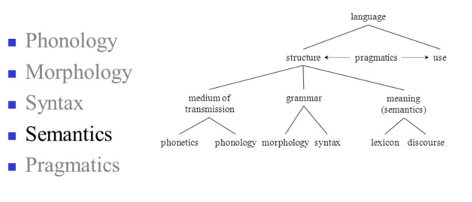
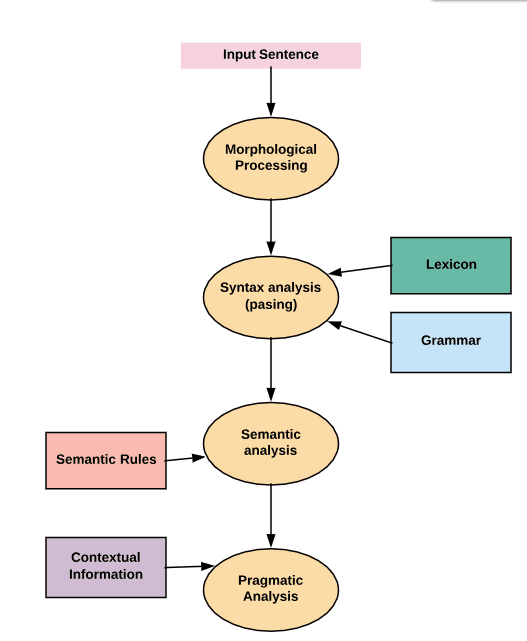
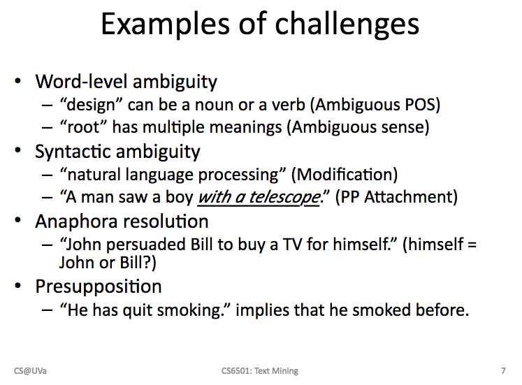
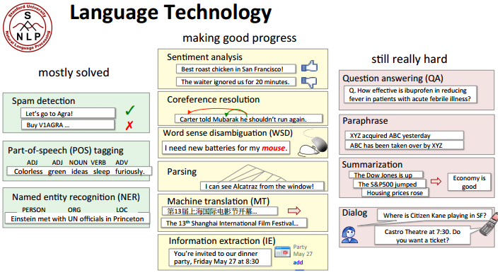
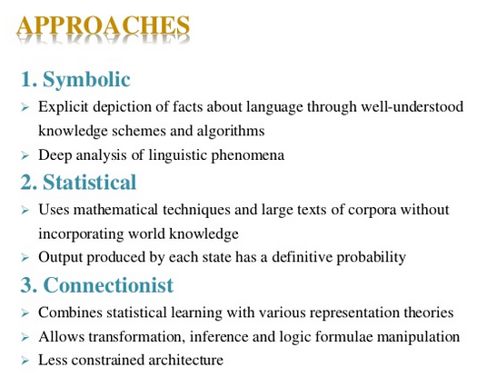
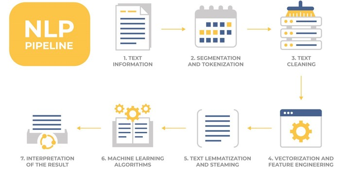

Natural Language Processing--Bringing Structure to Text and Extracting Emotions
Of all the kinds of data we look at, unstructured text is one of the most interesting and challenging. From web sites to social media, research papers to published reports, the world is awash in unstructured text awaiting analysis.
Natural Language Processing (NLP) arose from computational approaches to study written human language. Two of the earliest approaches date to the late 1800's. One leveraged simple word frequencies to build concordances (alphabetical lists of word frequencies in an author or text). Another developed "stylometry" to analyze style and solve authorial attribution. This approach was made famous by the study of the disputed authorship between Hamilton and Adams over several of the Federalist Papers. More recent (and sophisticated) applications have unmasked authors like J.K. Rowling when she published under a pseudonym.
Simple word frequencies can still be surprisingly useful at surfacing patterns in large texts. We'll start the week by discussing a great example in "Bankspeak" and then explore our own text--a novel you select from Australian Gutenberg.net.au in Voyant (The Tableau of NLP). [Note: Australia has a wider range of novels available than the US due to differing copyright laws.]
We'll also preview more sophisticated approaches to analyzing language. Machine Learning, for example, may now be able to diagnose (not predict) Bestsellers with over 80% accuracy, as we'll see in the Atlantic article.
Two of the more sophisticated methods we'll explore this week are topic modeling and sentiment analysis, and DataCamp will introduce you to the latter. Sentiment Analysis can be used for everything from tweets to speeches to novels. We'll read about "bestseller curves" and explore a novel of your choice in class. We'll also present a great example of topic modeling--the "Mining the Dispatch" project that explored newspaper articles during the Civil War and discovered some interesting history!
- Due Monday/Tuesday: (Be ready with (a) your Twitter Dev credentials and (b) the URL to a novel you're familiar with on gutenberg.au.org)
- Flipped Classroom NLP Video (20:00)
- Introduction to Natural Language Processing, DataCamp
- Part 1: Regular Expression and Tokenization
- Bankspeak; The Language of the World Bank 1945-2012, Franco Moretti and Dominique Pestre, Stanford Literary Lab: Pamphlet #9, Mar 2015
- Due Tuesday/Wednesday
- Can Big Data Find the Next "Harry Potter"?, Stephen Phillips, TheAtlantic.com, Sep 2016
- Due Wednesday/Thursday
- Bestseller Code, Chp 3: The Sensations or How to Form Some Perfect Curves (Sentiment Analysis)
- Due Thursday/Friday:
- Using AI to Unleash the Power of Unstructured Government Data (Applications and examples of NLP across government, Deloitte Touch Center for Government Insights, Jan 2016
- Sentiment Analysis in Python, DataCamp
- Part 1: Sentiment Analysis Nuts and Bolts
In Class Demos:
- A Hero's Journey to Digital Humanities Research (Steps and resources at bottom of page)
- More Standard NLP Goodness:
- Voyant
- Jupyter Notebook on Diachronic Sentiment Analysis
- Mining the Dispatch, Robert K. Nelson, University of Richmond, 2012
Quiz:
- NLP Quiz (Open Thursday 6pm EST through Saturday 6pm EST)






